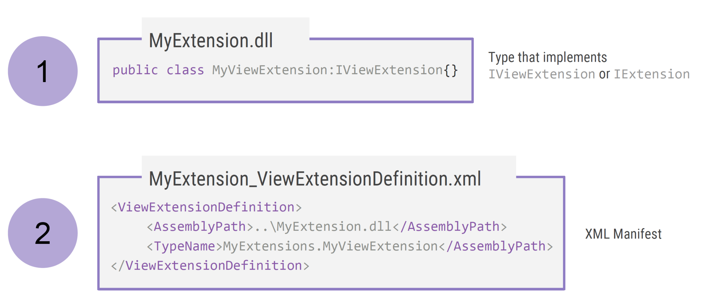
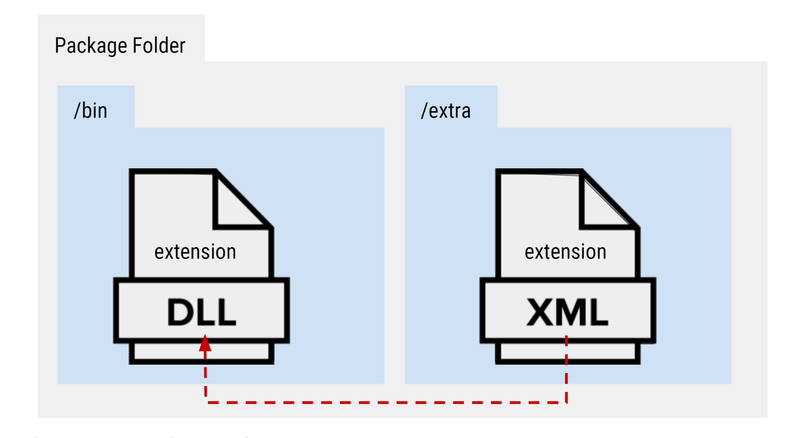
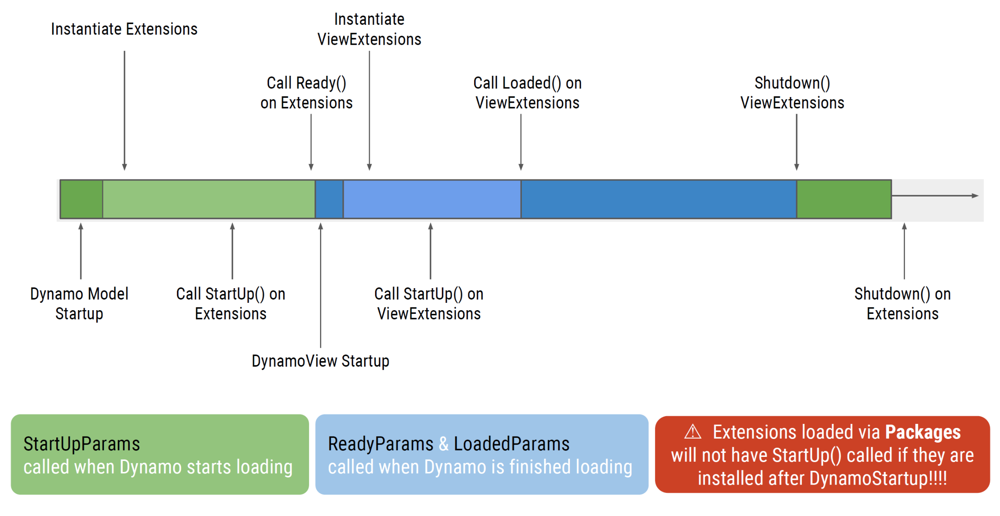
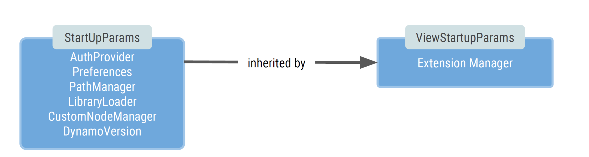
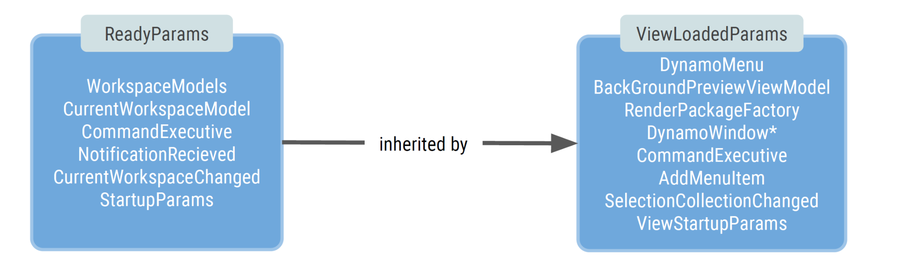

5.1 - Anatomy of an Extension
Dynamo implemented Extensions and ViewExtensions in a similar fashion as ZeroTouch nodes: they handle automagically how a dll is loaded and made available to the platform as long as it complies with certain steps and configurations, so extending Dynamo is simple and fun.
Extension Architecture
 In order for an Extension to be loaded, Dynamo needs mainly two things (for now):
- DLL library: This is the extension compiled library the contains the logic and functionality the developer wants to add to Dynamo.
- XML manifest: Basically, a file telling Dynamo where to get the Extension's
dllfrom.
Naming and Location
Dynamo will expect the Extensions and ViewExtensions to comply with certain naming and location standards to be able to load them automatically.
The file name of the xml manifest must be the name of the dll library, an underscore and the type of extension (Extension or ViewExtension). So for example, if the dll library is named MyAwesomeExtension.dll, its corresponding manifest must be MyAwesomeExtension_Extension.xml or MyAwesomeExtension_ViewExtension.xml, depending of the type of extension you are building.
Also, the manifest file must be located in one of the following directories:
- Dynamo Core folder, located on the installed directory on the C drive.
- As a package, on the
extrafolder.

Storing the manifest on the extra folder is usually a more stable way as:
- Sharing the extension will be easier as the
dllandmanifestwill be shipped under the same container (i.e. a package). - Specifying the assembly path on the manifest is easier as will always be a relative path within the package (i.e.
../bin/MyAwesomeExtension.dll). - Sometimes, writing to the C drive is protected and forbidden for user without admin rights, making it difficult to use an Extension.
Extension's Lifecycle
When Dynamo is initialized it performs several actions to have things up and running properly. These actions include what in this material is called the Extension's Lifecycle:
- During initialization Dynamo searches for any Extension that has been declared via its
xmlmanifest, calling theStartUp()method to initialize it andReady()orLoaded()when the extension is successfully initialized. - During normal execution, the extension performs any action that has been programed to do.
- Before Dynamo closes, it calls every extension's
ShutDown()method, that should be used to properly release any resource the extension is using. 
Dynamo APIs
During extension's initialization, Dynamo calls StartUp() and Ready()/Loaded() methods passing particular arguments that expose some of Dynamo's APIs to be used on the extension.
StartUpParams / ViewStartupParams
These arguments are injected to each Extension/ViewExtension on the StartUp() method. ViewStartupParams inherits from StartUpParams.
// Example on a ViewExtension
public void Startup(ViewStartupParams p)
{
// Magic happens here
}

ReadyParams / ViewLoadedParams
The ReadyParams is passed on when calling the Ready() method on an Extension, while the ViewLoadedParams is passed as the argument for the Loaded() method on a ViewExtension. ViewLoadedParams inherits from ReadyParams.
These two arguments also contains instances for the corresponding StartUpParams and ViewStartupParams.
// Example on a ViewExtension
public void Loaded(ViewLoadedParams p)
{
// Magic happens here
}

Extension and ViewExtension
As seen on the previous sections, there exist two types of extensions and the naming gives a clear indication of their intended use. Extensions are thought to handle logic and back-end actions on a headless mode, while ViewExtensions allows the developer to interact with Dynamo's UI and add his/her own. We will see these two cases more in depth on the following chapters.